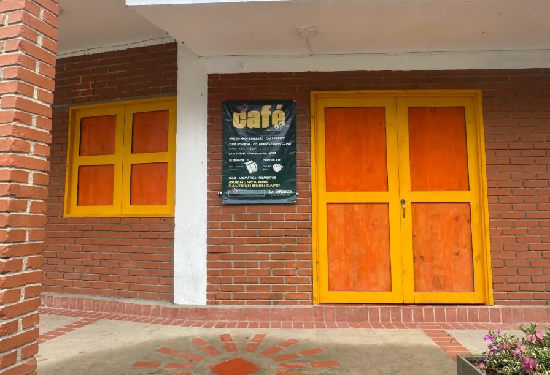
Emprendimiento mencionado
Café Farallones Pance
Marca y actividad cafetera asociada al territorio. La fotografía muestra el establecimiento compartido; confirma canales de venta y datos de contacto con sus responsables.
Una vitrina para emprendimientos con identidad y nuevas oportunidades productivas.
← Volver al inicioDos iniciativas destacadas por el usuario como expresiones de valor agregado e identidad local.

Marca y actividad cafetera asociada al territorio. La fotografía muestra el establecimiento compartido; confirma canales de venta y datos de contacto con sus responsables.
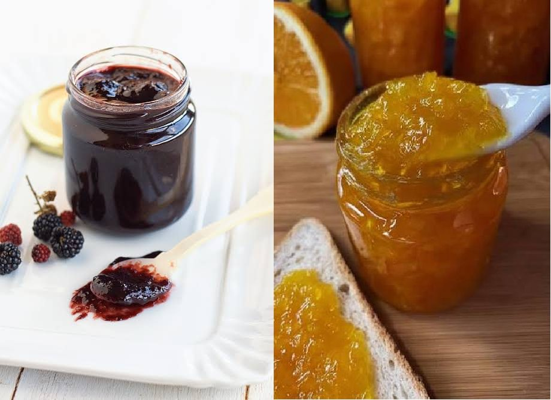
Productos transformados que agregan valor a las frutas y permiten diversificar la oferta local.
Son alternativas propuestas para estudiar su viabilidad; no se presentan como negocios actualmente establecidos en Pance.
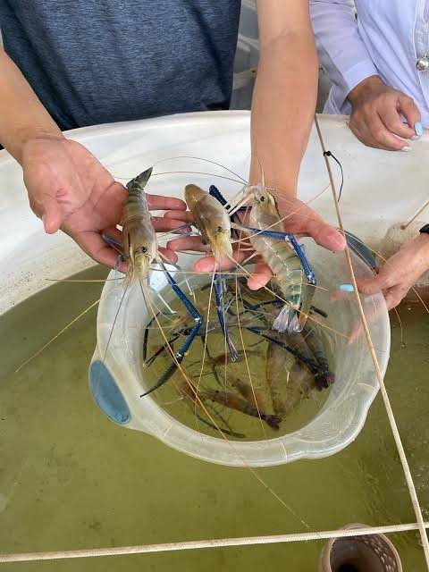
Acuicultura de alto valor. Requiere evaluar calidad y disponibilidad de agua, bioseguridad, permisos, especie y viabilidad ambiental.
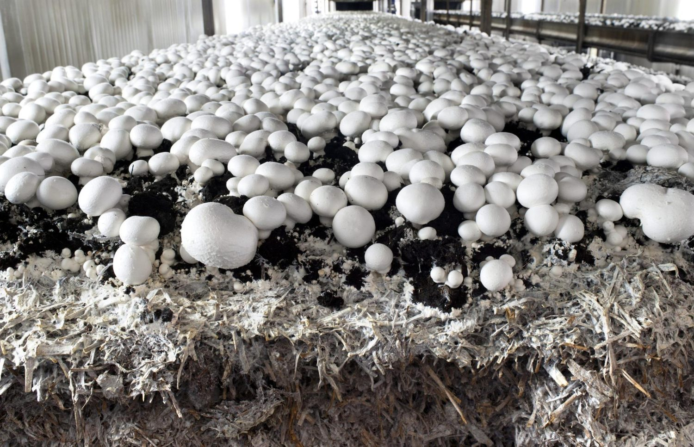
Producción bajo condiciones controladas, con potencial de abastecer restaurantes y mercados locales.
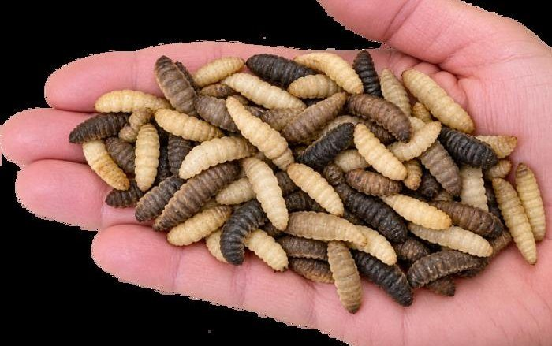
Alternativa para valorización de residuos orgánicos y producción de proteína para alimentación animal, sujeta a regulación sanitaria y ambiental.
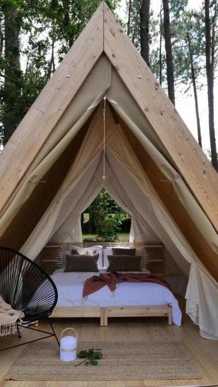
Alojamiento experiencial de mayor valor agregado. Requiere revisar uso del suelo, permisos, agua, saneamiento y capacidad de carga.
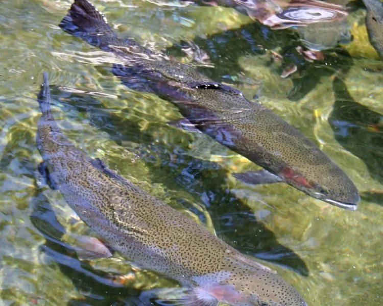
Piscicultura que exige condiciones adecuadas de agua fría, oxigenación, manejo de vertimientos y permisos.
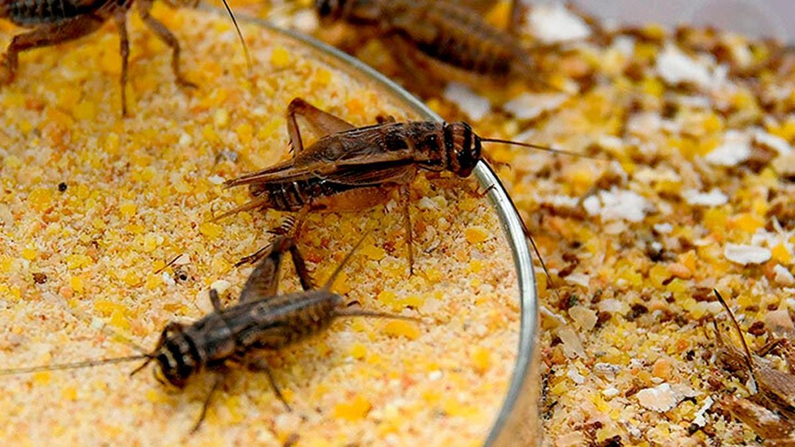
Producción de insectos para ingredientes proteicos, con validación sanitaria, técnica y comercial.
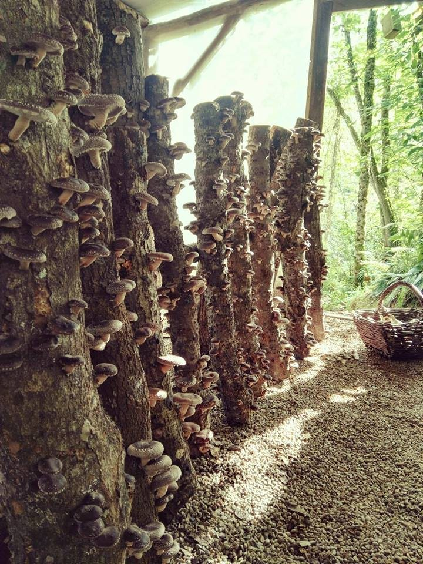
Hongo de valor agregado que puede cultivarse en sustratos o troncos preparados bajo condiciones controladas.
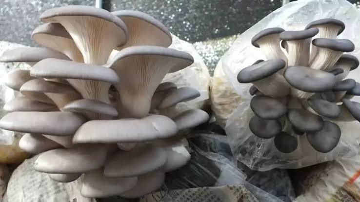
Cultivo de hongos comestibles con ciclos relativamente cortos y opciones de venta fresca o transformada.
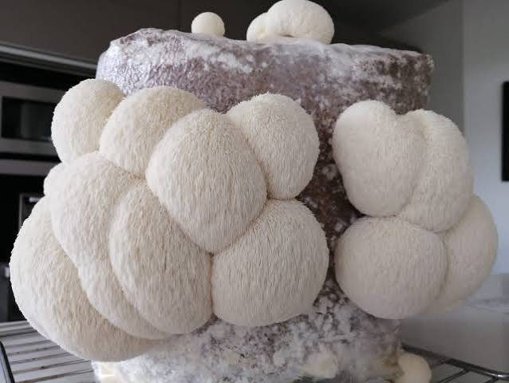
Hongo comestible de nicho con oportunidades de comercialización diferenciada y transformación.
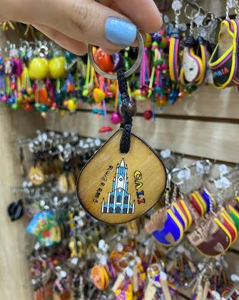
Diseño y comercialización de recuerdos, llaveros y productos artesanales con identidad cultural local.